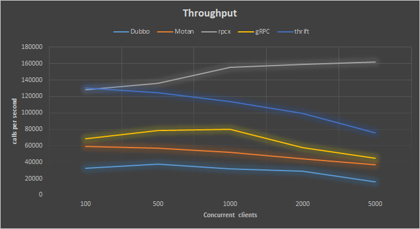
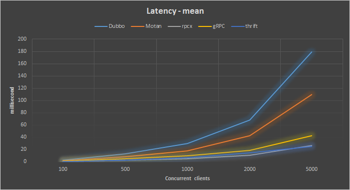
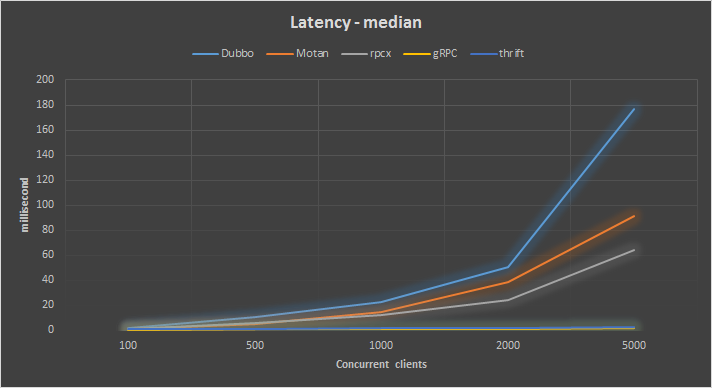
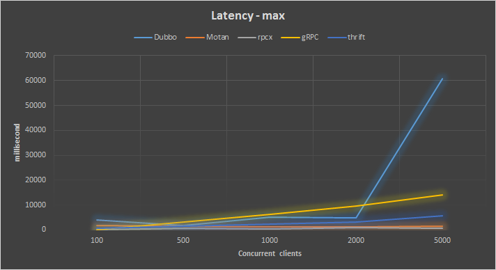

Dubbo 是阿里巴巴公司开源的一个Java高性能优秀的服务框架，使得应用可通过高性能的 RPC 实现服务的输出和输入功能，可以和 Spring框架无缝集成。不过，略有遗憾的是，据说在淘宝内部，dubbo由于跟淘宝另一个类似的框架HSF（非开源）有竞争关系，导致dubbo团队已经解散（参见http://www.oschina.net/news/55059/druid-1-0-9 中的评论），反到是当当网的扩展版本仍在持续发展，墙内开花墙外香。其它的一些知名电商如当当、京东、国美维护了自己的分支或者在dubbo的基础开发，但是官方的库缺乏维护，相关的依赖类比如Spring，Netty还是很老的版本(Spring 3.2.16.RELEASE, netty 3.2.5.Final),倒是有些网友写了升级Spring和Netty的插件。
Motan是新浪微博开源的一个Java 框架。它诞生的比较晚，起于2013年，2016年5月开源。Motan 在微博平台中已经广泛应用，每天为数百个服务完成近千亿次的调用。
rpcx是Go语言生态圈的Dubbo， 比Dubbo更轻量，实现了Dubbo的许多特性，借助于Go语言优秀的并发特性和简洁语法，可以使用较少的代码实现分布式的RPC服务。
gRPC是Google开发的高性能、通用的开源RPC框架，其由Google主要面向移动应用开发并基于HTTP/2协议标准而设计，基于ProtoBuf(Protocol Buffers)序列化协议开发，且支持众多开发语言。本身它不是分布式的，所以要实现上面的框架的功能需要进一步的开发。
thrift是Apache的一个跨语言的高性能的服务框架，也得到了广泛的应用。
后续还会增加更多的 RPC 框架的比较，敬请收藏本文网址
以下是它们的功能比较：
| Dubbo | Montan | rpcx | gRPC | Thrift | |
|---|---|---|---|---|---|
| 开发语言 | Java | Java | Go | 跨语言 | 跨语言 |
| 分布式(服务治理) | √ | √ | √ | × | × |
| 多序列化框架支持 | √ |
√ (当前支持Hessian2、Json,可扩展) |
√ |
× (只支持protobuf) |
× (thrift格式) |
| 多种注册中心 | √ | √ | √ | × | × |
| 管理中心 | √ | √ | √ | × | × |
| 跨编程语言 | × | × (支持php client和C server) | × | √ | √ |
对于RPC的考察， 性能是很重要的一点，因为RPC框架经常用在服务的大并发调用的环境中，性能的好坏决定服务的质量以及公司在硬件部署上的花费。
本文通过一个统一的服务，测试这四种框架实现的完整的服务器端和客户端的性能。
这个服务传递的消息体有一个protobuf文件定义：
|
|
相应的Thrift定义文件为
|
|
事实上这个文件摘自gRPC项目的测试用例，使用反射为每个字段赋值，使用protobuf序列化后的大小为 581 个字节左右。因为Dubbo和Motan缺省不支持Protobuf,所以序列化和反序列化是在代码中手工实现的。
服务很简单：
|
|
接收一个BenchmarkMessage，更改它前两个字段的值为"OK" 和 100，这样客户端得到服务的结果后能够根据结果判断服务是否正常的执行。
Dubbo的测试代码改自 dubo-demo,
Motan的测试代码改自 motan-demo。
rpcx和gRPC的测试代码在 rpcx benchmark。
Thrift使用Java进行测试。
正如左耳朵耗子对Dubbo批评一样，Dubbo官方的测试不正规 (性能测试应该怎么做？)。
本文测试将用吞吐率、相应时间平均值、响应时间中位数、响应时间最大值进行比较(响应时间最小值都为0，不必比较)，当然最好以Top Percentile的指标进行比较，但是我没有找到Go语言的很好的统计这个库，所以暂时比较中位数。
另外测试中服务的成功率都是100%。
测试是在两台机器上执行的，一台机器做服务器，一台机器做客户端。
两台机器的配置都是一样的，比较老的服务器：
- CPU: Intel(R) Xeon(R) CPU E5-2620 v2 @ 2.10GHz, 24 cores
- Memory: 16G
- OS: Linux 2.6.32-358.el6.x86_64, CentOS 6.4
- Go: 1.7
- Java: 1.8
- Dubbo: 2.5.4-SNAPSHOT (2016-09-05)
- Motan: 0.2.2-SNAPSHOT (2016-09-05)
- gRPC: 1.0.0
- rpcx: 2016-09-05
- thrift: 0.9.3 (java)
分别在client并发数为100、500、1000、2000 和 5000的情况下测试，记录吞吐率(每秒调用次数, Throughput)、响应时间(Latency) 、成功率。
(更精确的测试还应该记录CPU使用率、内存使用、网络带宽、IO等，本文中未做比较)
首先看在四种并发下各RPC框架的吞吐率：

rpcx的性能遥遥领先，并且其它三种框架在并发client很大的情况下吞吐率会下降。
thrift比rpcx性能差一点，但是还不错，远好于gRPC,dubbo和motan,但是随着client的增多，性能也下降的很厉害，在client较少的情况下吞吐率挺好。
在这四种并发的情况下平均响应：

这个和吞吐率的表现是一致的，还是rpcx最好，平均响应时间小于30ms, Dubbo在并发client多的情况下响应时间很长。
我们知道，在微服务流行的今天，一个单一的RPC的服务可能会被不同系统所调用，这些不同的系统会创建不同的client。如果调用的系统很多，就有可能创建很多的client。
这里统计的是这些client总的吞吐率和总的平均时间。
平均响应时间可能掩盖一些真相，尤其是当响应时间的分布不是那么平均，所以我们还可以关注另外一个指标，就是中位数。
这里的中位数指小于这个数值的测试数和大于这个数值的测试数相等。

gRPC框架的表现最好。
另外一个就是比较一下最长的响应时间，看看极端情况下各框架的表现：

rpcx的最大响应时间都小于1秒，Motan的表现也不错，都小于2秒，其它两个框架表现不是太好。
本文以一个相同的测试case测试了四种RPC框架的性能，得到了这四种框架在不同的并发条件下的性能表现。期望读者能提出宝贵的意见，以便完善这个测试，并能增加更多的RPC框架的测试。